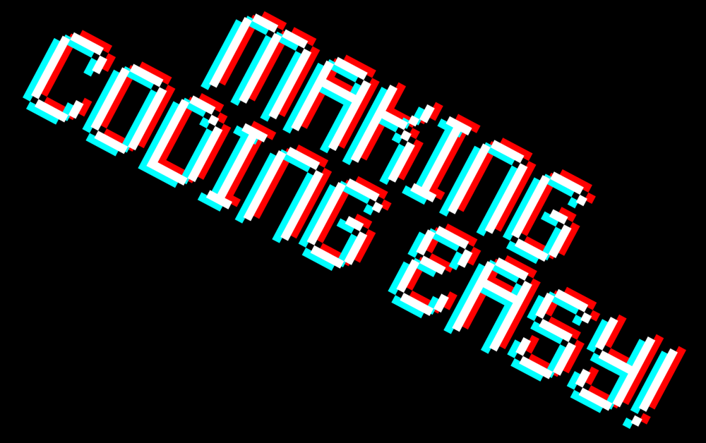
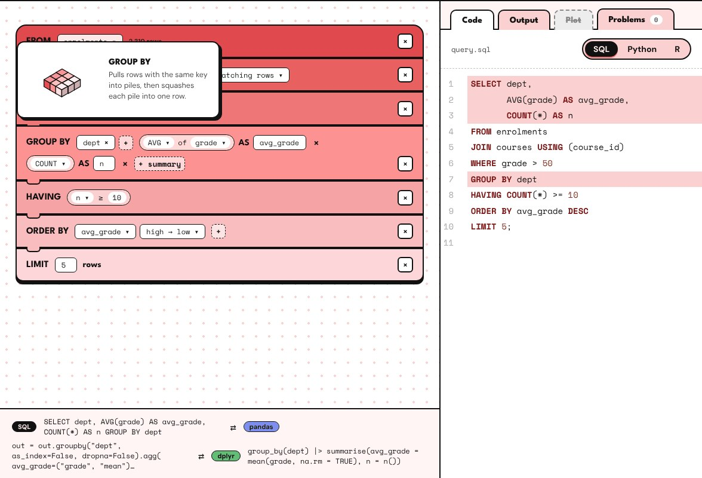
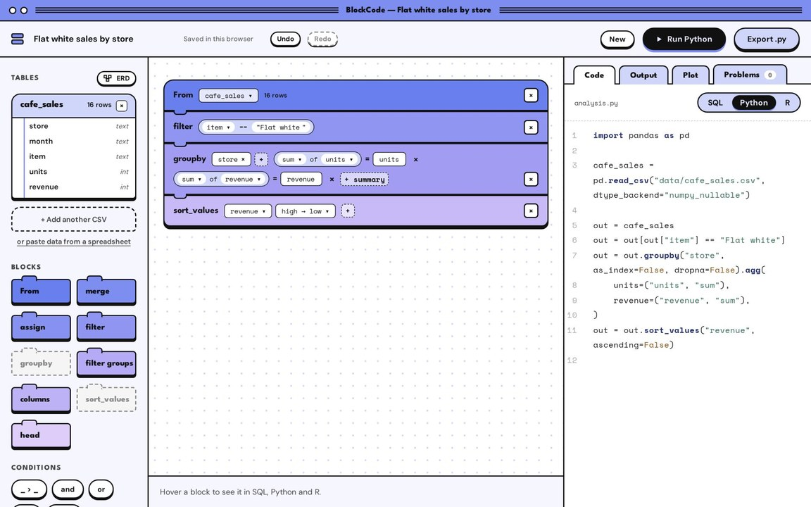
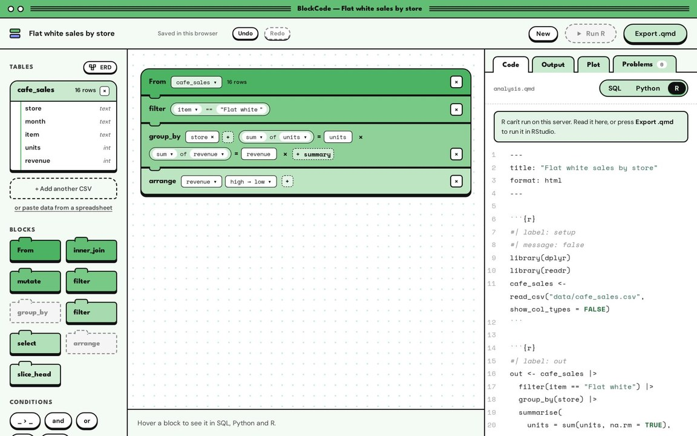
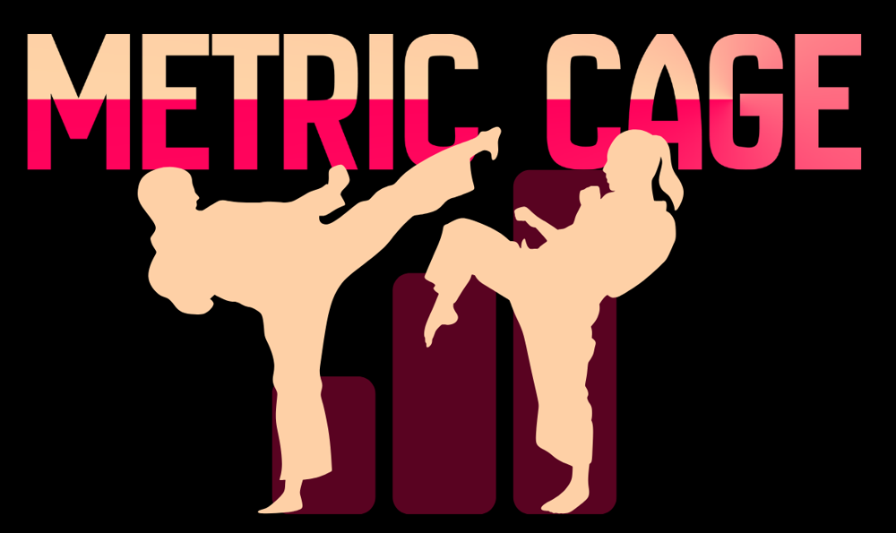
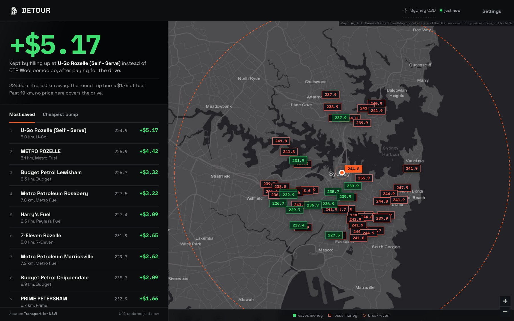

Block Code is a visual editor for learning data work. People who struggle with SQL, pandas or dplyr tend to get stuck on the same few ideas in all three, like joins and grouping. Block Code teaches each idea once: you load a CSV, snap blocks together, and the matching code appears beside them as you build.
It also works in reverse: paste code and the blocks rebuild. Underneath, every stack becomes one relational plan, and the SQL, Python and R are all generated from it. Python and R run in the browser through Pyodide and webR, and when code fails, the error points back to the block that caused it.
That single plan is what makes the engine testable. Property tests check that generated code parses back into the same plan, and that SQL and pandas return the same rows. The engine has more than 400 tests, and 15 Playwright tests drive the editor end to end.




42 of 55 confident calls landed in a season it had never seen.
Metric Cage predicts UFC fights. Given two fighters and a date, it returns a win probability for each, along with how the fight is likely to end and which features drove the estimate.
The estimate blends four models trained on 7,200+ UFC bouts since 2010: XGBoost, logistic regression, a PyTorch LSTM that reads each fighter’s career in order, and a custom Elo rating. I fitted the blend weights on a 2023 validation slice to minimise log-loss. The output then goes through isotonic calibration and temperature scaling, so a 70% call should come true about 70% of the time. I validated it walk-forward, and leakage tests in pytest check that no future fight reaches training.
For the real test, I stopped training in May 2025 and replayed all 14 cards from January to May 2026 in order, updating ratings only as each event finished and using no betting odds. Across 175 fights it picked 114 winners and reached an AUC of 0.691 (95% CI 0.614–0.764). Published academic UFC models score between 0.68 and 0.74, mostly with betting odds.
I was aiming for 0.74 and didn’t get there. The model also leans cautious: when it said about 69%, the fighter won 78% of the time. Method predictions were weak this season, and the round output is still a fixed base rate rather than a real prediction.
The same dataset can answer questions the model never asks. In this piece I used 7,270 UFC fights to look at what happens after a fighter is knocked down.
Fighters who were dropped and carried on were stopped by strikes in the next round 10.6% of the time, against 5.1% for those who weren’t. Part of that gap is probably the beating itself: fighters who took the same punishment without going down were stopped 7.2% of the time. After adjusting for other factors, the knockdown’s own link to being stopped shrank, and it didn’t survive a Holm correction across 22 tests. Its link to being dropped again did: 13.9% against 5.6%, and 1.9 times the odds after adjustment.
Age seems to matter too. Among dropped fighters aged 33 and over, 15.1% were stopped in the next round, compared with 5.7% of those under 29. A longer break after a knockout loss made no clear difference to the chance of being stopped again.
A companion piece, Does the Damage Show?, asked whether the head strikes a fighter absorbs predict decline. On their own they barely relate to winning, and that faint link disappears once age is taken out. Early knockdowns are a different story: fighters dropped in their first five bouts later lost by KO 18.7% of the time, against 12.5% for matched fighters who weren’t (p = 0.011).
Detour ranks NSW petrol stations by how much you save once the drive is paid for, rather than by pump price.
It pulls live prices from the Transport for NSW FuelCheck API, routes the round trip to each station with OSRM, and subtracts the fuel that trip burns. In one snapshot from the CBD, filling up at a station in Rozelle 5 km away saved $5.17 over the nearest pump, even after $1.79 in fuel to get there and back. Past 19 km, no price covered the drive.

I led a team of six analysing a 673-student survey for the School’s Multiple Learning Pathways research, and our project won the unit’s Project Prize. Cramming rates differed sharply by pathway, from 41% in one to 18% in another, and students who wrote the longest responses had 3.35 times the odds of prior high marks.
Over 48 hours, I led a team of five through a large de-identified healthcare dataset. We compared a neural network with logistic regression and decision-tree models on a shared train/test split, then presented an interactive dashboard and a 13-slide report to the supervising statistics staff.
I’m in my second year of a BSc at the University of Sydney, majoring in data science with a minor in computer science. I started at Macquarie and transferred after first year.
Most of my projects start with a question I can’t answer by looking it up, such as which servo is actually worth the drive. I work mainly in Python, SQL and R, and bring in PyTorch, XGBoost or scikit-learn when the question needs a model. Evaluation is where most of the time goes. I don’t trust a model’s numbers until they hold up on new data.
If you’re hiring, or want to talk through one of these projects, email me.
alazadsafwat@gmail.com© 2026 Safwat Al Azad, Sydney